Nozzle
Camera
System
A miniature sensor payload operating millimeters from a 300°C heat source, in continuous kinematic motion, inside a geometry with almost no clearance. No commercial solution existed. Built one from a hacked endoscope after systematically evaluating 25 different units. Published the full methodology openly so others could evolve it. CNC Kitchen, Obico, and others credited the work by name. The concept was later commercialized as a dedicated product category.
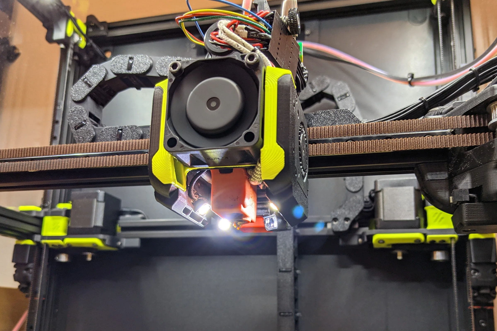
The Problem: Visibility at the Point of Failure
3D printing fails at the nozzle. Anyone who has spent serious time printing knows the ritual: kneeling down, face close to the print bed, watching the first layer extrusion to make sure it's adhering correctly. If the first layer fails, everything that follows, potentially hours or tens of hours of print time, fails with it. By the time a failure is visible in the output, it has usually been propagating for dozens of layers.
Real-time nozzle monitoring would change this entirely: catch failures at onset, tune temperature and flow profiles visually rather than empirically, understand exactly what's occurring at the nozzle under different conditions, and monitor comfortably from a display rather than on your knees. At least one established 3D printing accessories brand was known to be developing a commercial nozzle camera at the time. What surfaced was a module larger than the printhead itself, using a long optical extension to reach down toward the nozzle. The unit looked production-ready but was never officially announced. After my published video it quietly disappeared. The engineering constraint wasn't just solving the problem. It was solving it in a package small enough and light enough to actually work on a fast printer.
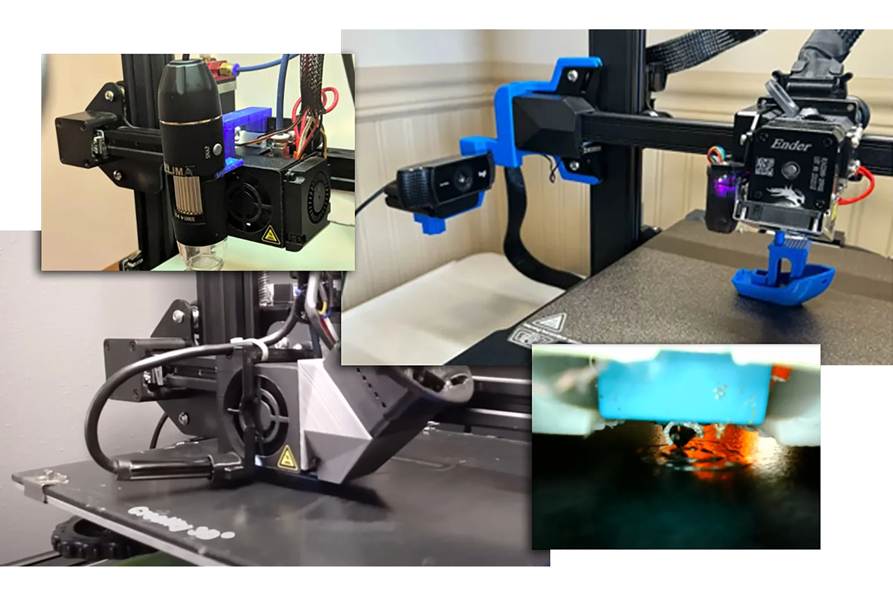
Nozzle cameras weren't entirely unknown in the DIY community. A few people had strapped USB endoscopes to their printhead pointing at the nozzle. The results were poor: focus too long, lighting inadequate. The endoscope body hanging in front of the printhead also added cantilevered mass on a fast-moving carriage, which compounds on a printer axis that is rarely perfectly rigid. The concept was right. The implementation needed a complete rethink.
Systematic Evaluation: 25 Endoscopes, Spreadsheet, Mill
Before designing anything, the first step was understanding what the available hardware could actually do. I ordered approximately 25 different low-cost USB endoscope models from Amazon and AliExpress and tested each one systematically: plugged into OBS to document video quality under bright, medium, and low light conditions, then into device properties to record supported resolutions, aspect ratios, frame rates, and color profile settings. Everything into a spreadsheet.
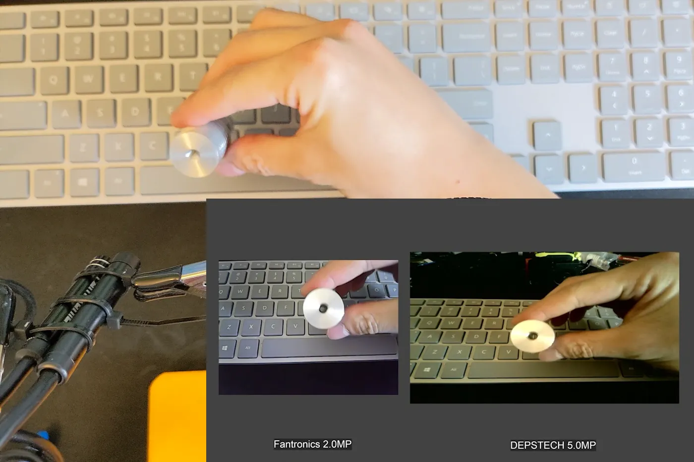
Patterns emerged quickly. Many different-branded models share identical internal electronics and image sensors, same resolution, same output, same limitations, just different housings at different prices. Those were grouped and the higher-cost duplicates eliminated. Some endoscopes output higher resolution than their packaging advertises. Some support 4:3 aspect ratio in addition to 16:9, providing more vertical resolution, useful for looking down at a nozzle. Higher resolution models need more light to perform well, which makes sense given the same sensor size spread across more pixels. They also have slower sensor readout speeds relative to their pixel count, which in a high-acceleration motion environment like a printhead produces more rolling shutter jelly effect. Not ideal. After this testing I narrowed the field to three candidate models worth opening.
To extract the camera modules, I first established orientation in OBS by rotating each endoscope until the image was upside down, then marked the underside of the casing with a sharpie. That's the cut side: the circuit board sits flat inside with open space below it, so cutting from the underside keeps the endmill away from the PCB and ribbon cable. Clamped in the mill vise, light passes with a 4-flute endmill until the metal casing was breached, then a reversed snap ring plier to pry it apart. PCB and camera module fell out on their USB cables intact. Each one plugged back in and confirmed functional before proceeding.
Community feedback after my YouTube video was published revealed a simpler method: heat the rear junction where the rubber stress relief meets the metal casing, that joint is glued, and simply pull it apart. Worth knowing for anyone replicating the project.
Lens Hunt: Ruler, Macro Kit, and the Optical Solution
With candidate camera modules extracted, the next step was mapping their native focal distances using a purpose-built test jig: two 3D printed pieces that snap onto a 2020 aluminum extrusion, one holding a visual target, one holding the camera module, each slideable independently so the gap between them can be dialed to find the exact focal point. Logged each module's focal distance into the spreadsheet. These modules focus at three to four inches. The target working distance for the nozzle cam geometry was 18 to 20mm. Two options: re-focus the lens by breaking its factory glue and threading it closer, or place an additional optical element in front of the module to shift the focal plane. Both approaches were tested and both worked. The guide covers both with pros and cons for each. The add-a-lens approach was preferred because an element in front of the module also provides a thermal barrier between the camera electronics and the nozzle block.
First candidate lens: a small magnifying glass molded into a plastic ruler sitting on the workbench. Not a deliberate choice, just the fastest possible test of the concept using whatever was immediately at hand. Cut it off with a Dremel, built a third piece for the test jig to hold it, confirmed focus range was close. The image quality through a scratched-up plastic ruler lens was terrible. Back to searching.
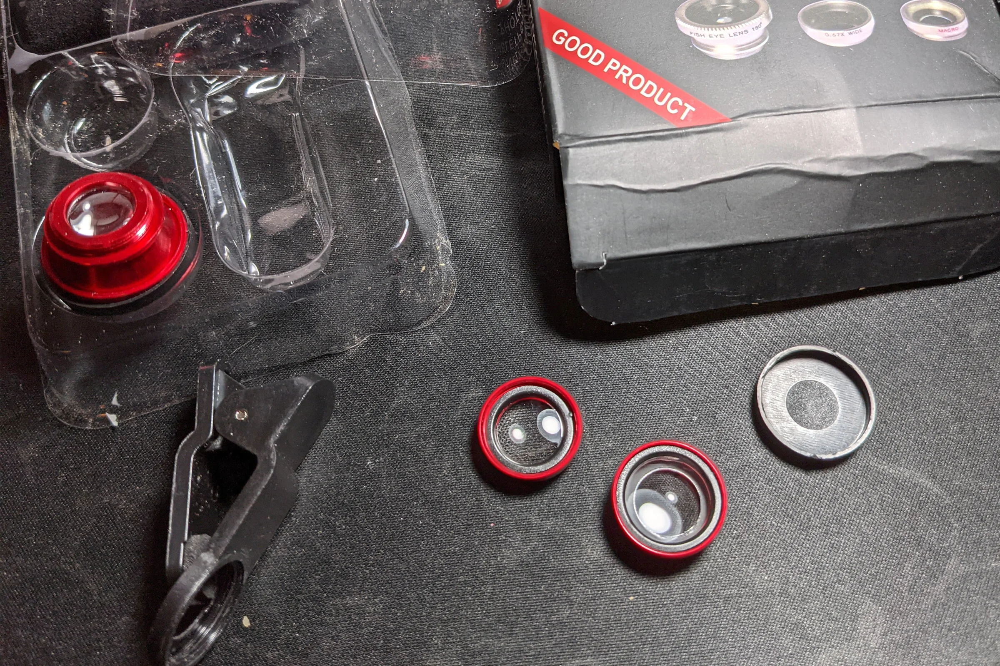
Second candidate: cheap clip-on lens kits for smartphones, the kind that come three to a pack with fisheye, wide, and macro. They were everywhere on Amazon, cheap, and nobody wanted them. Ordered a few to experiment. The macro lens element was essentially perfect: focus distance exactly right, image quality surprisingly excellent. Cut away the aluminum barrel to extract the plastic element and put it into the test jig. That was the optical solution.
One problem surfaced during integration: the lens element and its 3D printed housing would contact the print bed surface at the required placement angle. The fix: held the small lens against the bench grinder and ground a flat edge onto it. Perfectly reasonable thing to do with your fingers on a small lens element, for a scrapper maker. Except for the moment I accidentally touched the grinding wheel. The YouTube video captured that exact frame. A split-second text overlay labeled it "free skin removal." It's probably the most-noticed detail in the video.
When filming the YouTube guide, the clip-on macro kit had been updated by the manufacturer to a bigger lens, no longer usable. Ordered 20+ kits from Amazon, eBay, and AliExpress, contacted sellers directly, confirmed product page photos, all received were the wrong size. Also destroyed the last remaining original lens element during testing. This is the reason the video took so long to release. A fellow Voron Discord member pointed to Blips lenses as a tested alternative. Blips worked at a nearly identical 17mm focal distance, easier to cut to size, and became the new recommendation in the video. However the Blips element is soft lens material that doesn't hold up well in a heated chamber environment for permanent installation.
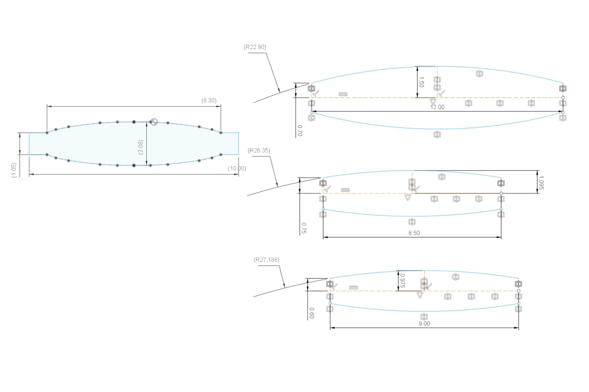
When it came time to make another lens for myself, I photographed the original element in side profile using a mirrorless camera macro lens, recreated the profile in Fusion 360 to extract its optical geometry in numbers, used optical formulas to identify the exact specification, then searched AliExpress extensively for a matching glass element. Found one: an actual optical-grade glass element at the correct spec, which produced better image quality than the original plastic element. That's the permanent solution for anyone building their own.
Integration Design: FOV Planning, Angles, and Carriage Mounting
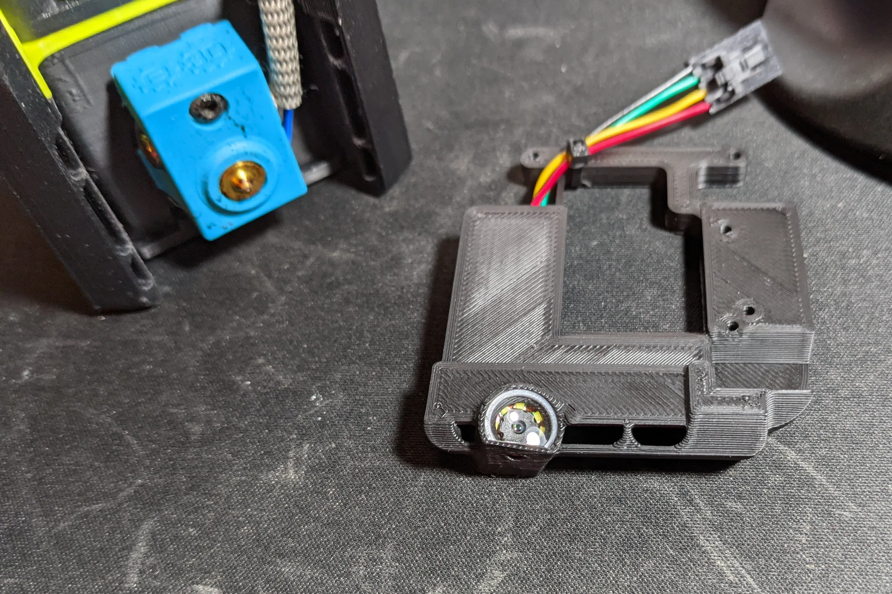
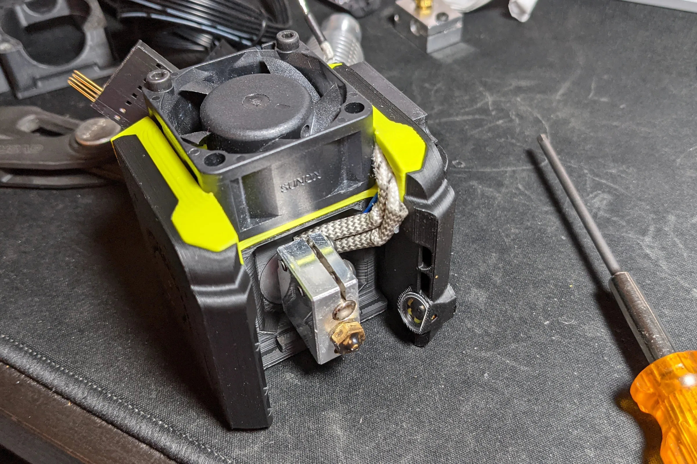
The first prototype integrated the camera module into the right side part cooling fan duct, the fastest way to validate the concept without redesigning anything else. It worked well enough to confirm the approach, but obstructed cooling performance and required a dedicated camera module for each modular printhead. Neither was acceptable for a permanent installation.
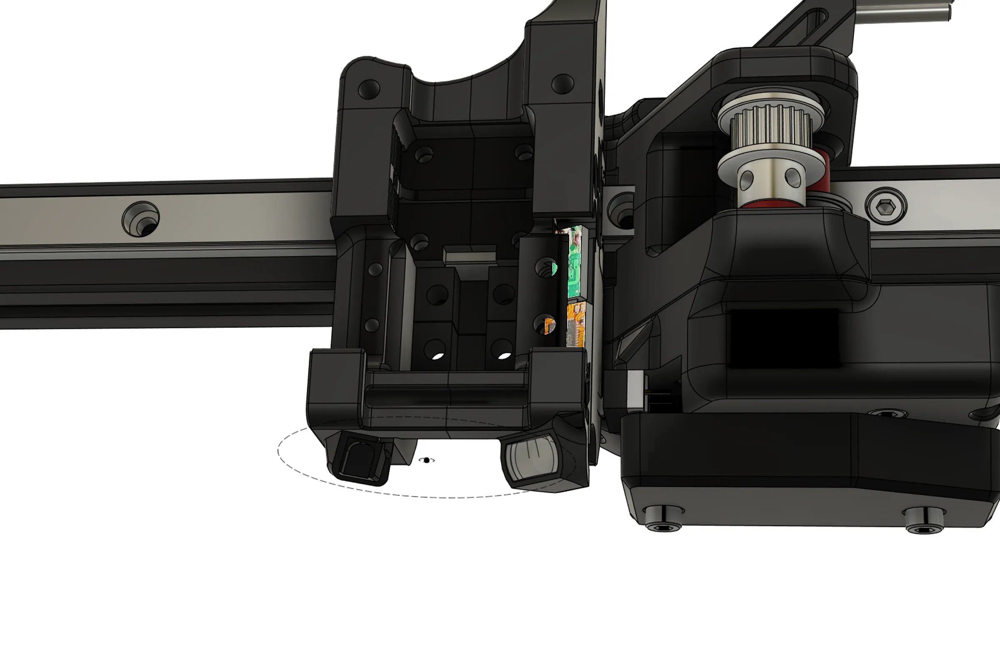
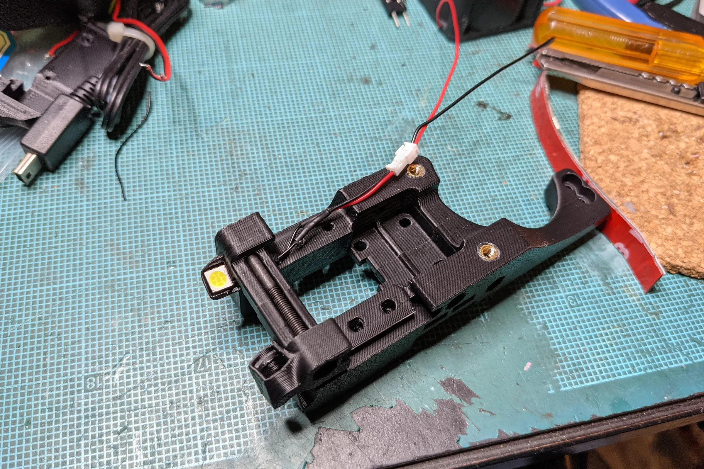
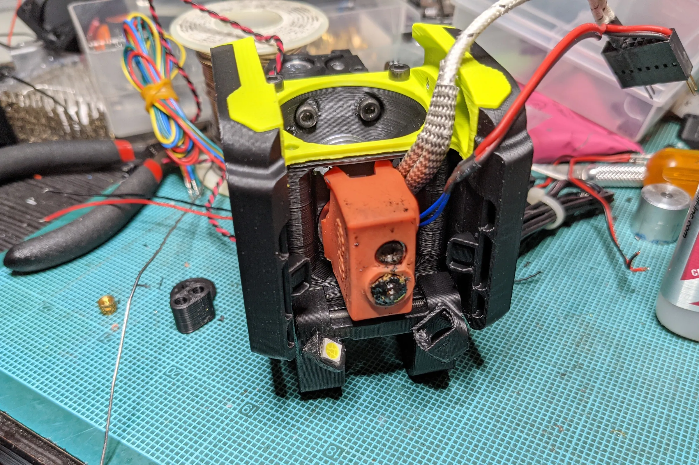
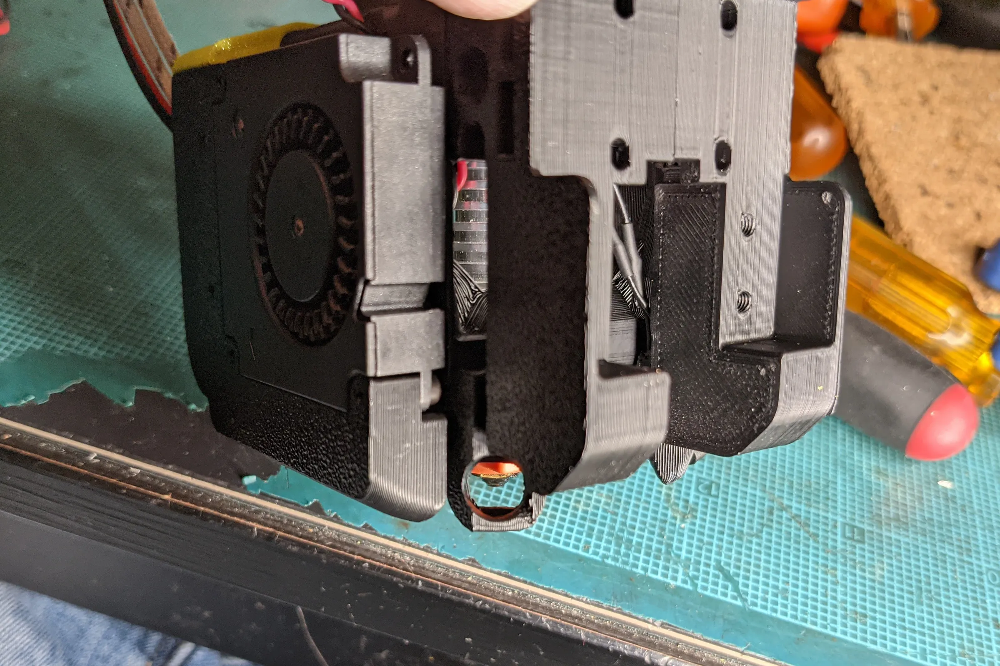
The permanent solution placed the camera module into the printhead carriage rather than the printhead itself. The carriage is shared across all printhead configurations. Each individual printhead only needs the lighting assembly, cheap, durable, and requiring only two additional wires in the harness. One camera serves every modular printhead combination without duplication.
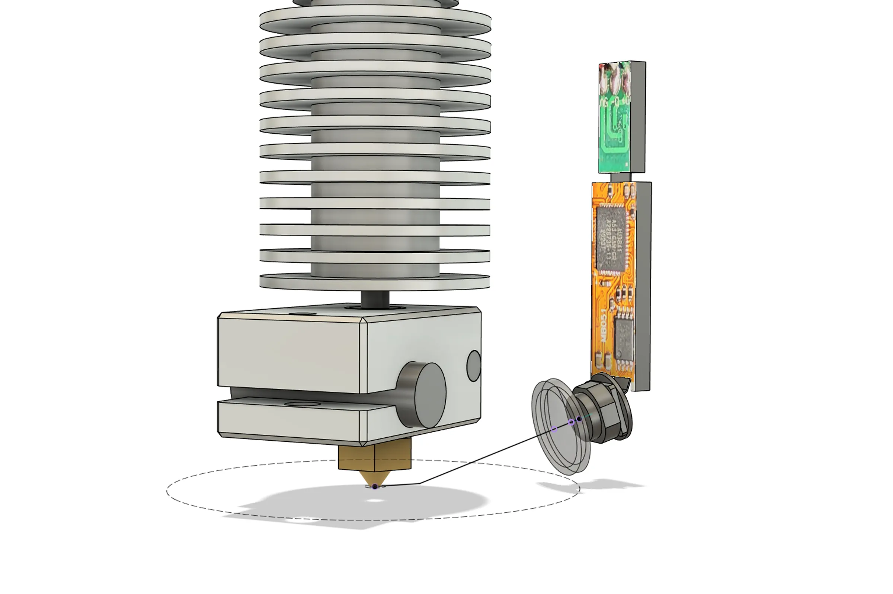
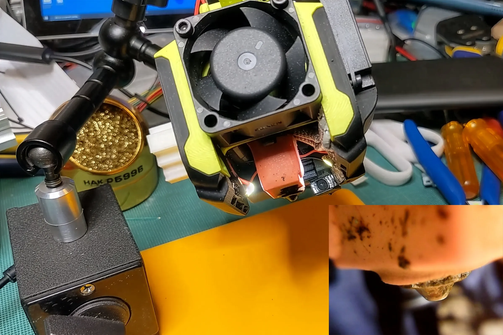
Camera positioning was planned in Fusion 360 by plotting the field of view cone of the camera module with and without the added lens element against the CAD assembly. The final geometry: 37.5 degrees to the side from dead center on the hotend, 17.5 degrees downward, aimed approximately 4.75mm in front of the nozzle tip. This provides a view of two sides of the heating block plus the nozzle and the immediate deposition zone. Confirmed physically by holding the assembly against the printhead and capturing footage in OBS before committing to fabrication.
Illumination, Shielding, and Thermal Validation
These camera modules have automatic exposure compensation that cannot be disabled. The only way to get predictable, consistent image output is to provide a steady, controlled flood of light, the auto exposure stabilizes and effectively comes under indirect control.
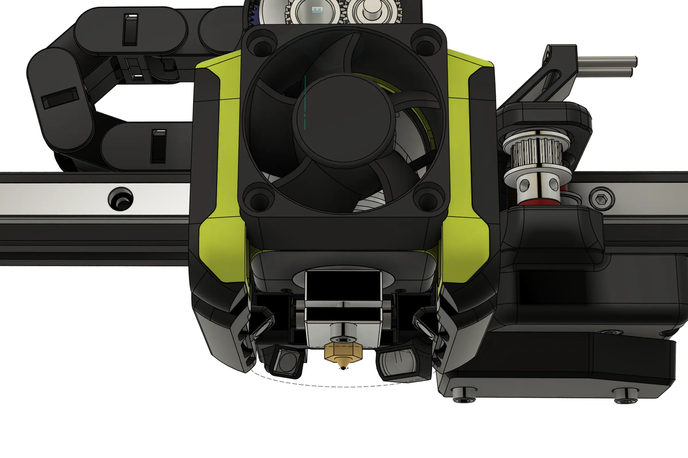
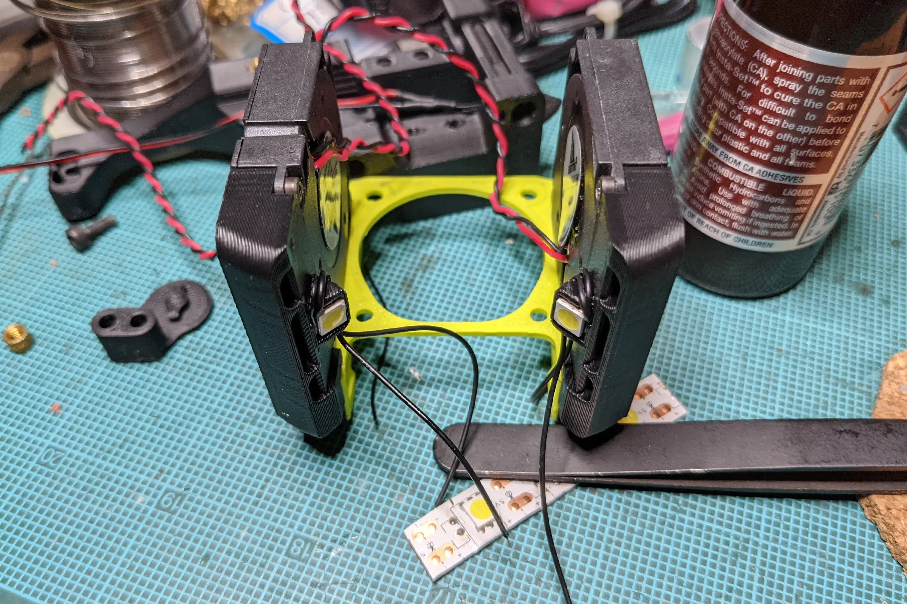
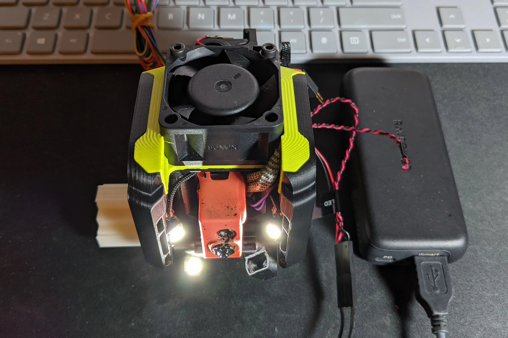
Scavenged 5050 LED units off cheap generic LED strip lights, chose 5V specifically because the Voron runs three separate voltage rails and only the 5V stays live when the printer is powered off, meaning the nozzle light can be switched on independently for printhead swaps. LED placement is deliberate: one LED mirrored low on the opposite side from the camera, two more higher up on each side of the hotend. The goal is coverage from multiple heights and angles simultaneously to flood the nozzle area without shadows. The result from the first test was immediately excellent, sharp, clear, real-time visibility directly at and under the nozzle.
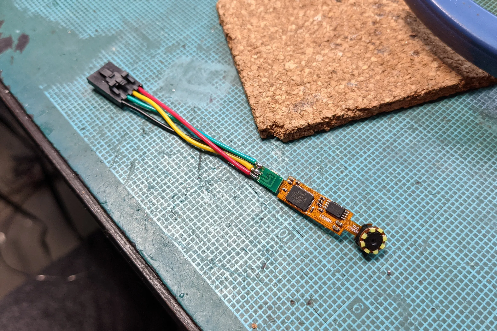
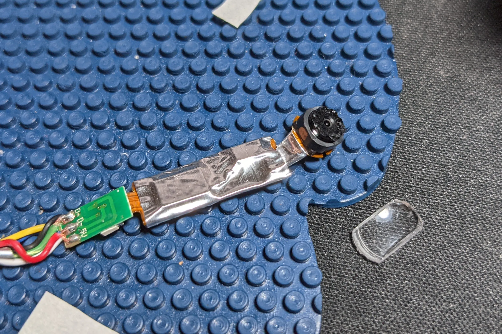
The camera PCB was prepared for the environment inside a running 3D printer: Kapton tape for insulation, then wrapped in aluminum tape for EMI shielding against stepper motor signals, heater PWM, and the various other noise sources packed into a small space. A printer has a lot of high-frequency electrical activity in a very confined area. Better safe than sorry when the whole assembly is permanent.
Thermal validation was not assumed. I enabled a spare thermistor channel on the printer controller board, wired a 10K thermistor directly to the camera module, wrapped the assembly in aluminum foil tape, and taped it to the approximate final position. Because the printer already uses identical 10K thermistors for the nozzle and heated bed, the camera temperature appeared as a third live channel in Octoprint alongside the nozzle and bed plots. Ran hundreds of hours of normal printing with the thermal data logging continuously. The camera module temperature remained stable throughout, including during extended high-temperature ABS and polycarbonate sessions in a fully enclosed printer. Only after confirming this permanently installed the assembly.

Publication Philosophy and Outcome
After the system was validated and running on the Voron, a few test clips went up on YouTube with no particular intent. The response was significant enough to prompt a proper guide: "3D Printer Nozzle Cam, Complete How To using endoscope," covering endoscope selection, camera extraction, both optical approaches (macro lens addition and direct refocus), LED illumination, integration, and thermal management. The guide was deliberately calibrated for the broadest possible audience rather than engineering depth, the goal was maximum community adoption, not maximum technical exposition, and to answer the community's questions once in a video rather than hundreds of times in individual messages. The guide was published with full STEP reference files on Thingiverse.

The format was deliberate. I had considered productizing the system, evaluated inventory requirements, assembly complexity for fragile electronics, calibration overhead, and market size, and decided against it. Publishing openly was the right call for a different reason: I was only able to build this by standing on top of what others had shared openly before me. The goal was for people to understand the approach well enough to evolve it, not just download and print. A turnkey STL teaches nothing. Full methodology published, everything documented, anyone willing to do the work can build their own and take it further.

The open source loop worked. CNC Kitchen, one of the most respected technical channels in the 3D printing community, credited the design by name and published their own implementation, noting they chose to directly re-focus the endoscope lens rather than add a macro element, one of the two approaches covered in the guide. Obico's official nozzle camera installation documentation credits the YouTube guide as a primary source. The community built on it, modified it, and iterated it in exactly the way it was intended to be used. The concept was eventually commercialized as a dedicated product category, dedicated nozzle camera products are now sold by multiple manufacturers and some commercial printers ship with similar systems built in. Being credited by name and being copied are both forms of market validation. Getting both means the work was right.